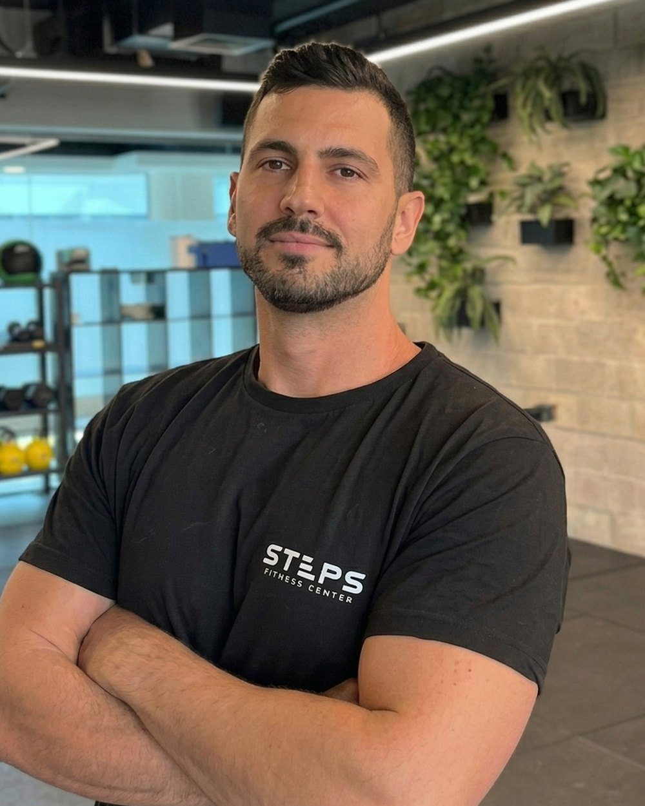

הסיפור
למה הקמנו מסלול
תזונה בסטודיו.
עשרות מתאמנות מגיעות לכאן שבוע אחרי שבוע. משקיעות באימונים. ולא רואות תוצאות.
לא כי הן לא משתדלות. כי אף אחד לא הסביר להן מה לאכול. ואיך להכניס את זה לשגרה שכבר עמוסה. וזה בסדר גמור. זה לא משהו שאמורים לדעת לבד.
אז הקמנו מסלול ייעודי. אימונים ותזונה במקום אחד, אצל אותם אנשים, עם אותם נתונים. ככה מוציאים את המקסימום משניהם.
ותזונה היא לא רק איך שאת נראית. היא ההתקדמות שלך באימון. ההתאוששות אחריו. והאנרגיה שלך בשאר היום.

3
חודשים של ליווי
4
פגישות אישיות איתי
10
מקומות במחזור